- Discuss the wave character of light.
- Identify the changes when light enters a medium.
We know that visible light is the type of electromagnetic wave to which our eyes respond. Like all other electromagnetic waves, it obeys the equation
where \(c = 3 \times 10^{8} m/s\) is the speed of light in vacuum, \(f\) is the frequency of the electromagnetic waves, and \(\lambda\) is its wavelength. The range of visible wavelengths is approximately 380 to 760 nm. As is true for all waves, light travels in straight lines and acts like a ray when it interacts with objects several times as large as its wavelength. However, when it interacts with smaller objects, it displays its wave characteristics prominently. Interference is the hallmark of a wave, and in Figure 1 both the ray and wave characteristics of light can be seen. The laser beam emitted by the observatory epitomizes a ray, traveling in a straight line. However, passing a pure-wavelength beam through vertical slits with a size close to the wavelength of the beam reveals the wave character of light, as the beam spreads out horizontally into a pattern of bright and dark regions caused by systematic constructive and destructive interference. Rather than spreading out, a ray would continue traveling straight ahead after passing through slits.
MAKING CONNECTIONS: WAVES
The most certain indication of a wave is interference. This wave characteristic is most prominent when the wave interacts with an object that is not large compared with the wavelength. Interference is observed for water waves, sound waves, light waves, and (as we will see in "Special Relativity") for matter waves, such as electrons scattered from a crystal.
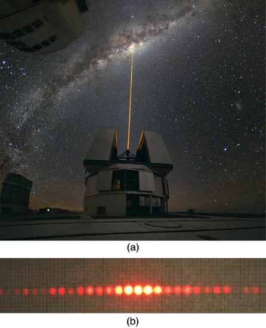
Light has wave characteristics in various media as well as in a vacuum. When light goes from a vacuum to some medium, like water, its speed and wavelength change, but its frequency \(f\) remains the same. (We can think of light as a forced oscillation that must have the frequency of the original source.) The speed of light in a medium is \(v = c/n\), where \(n\) is its index of refraction. If we divide both sides of equation \(c = f \lambda\) by \(n\), we get \(c/n = v = f \lambda / n\). This implies that \(v = f \lambda_{n}\), where \(\lambda_{n}\) is thewavelength in a mediumand that
where \(\lambda\) is the wavelength in vacuum and is the medium’s index of refraction. Therefore, the wavelength of light is smaller in any medium than it is in vacuum. In water, for example, which has \(n = 1.333\), the range of visible wavelenghts is \(\left( 380 mm \right) / 1.33\) to \(\left( 760 nm \right) / 1.333\), or \(\lambda_{n} = 286 ~ to ~ 570 nm\). Although wavelengths change while traveling from one medium to another, colors do not, since colors are associated with frequency.
📖 OpenStax College Physics, Section 27.1. openstax.org · CC BY 4.0
- Discuss the propagation of transverse waves.
- Discuss Huygens’s principle.
- Explain the bending of light.
Figure shows how a transverse wave looks as viewed from above and from the side. A light wave can be imagined to propagate like this, although we do not actually see it wiggling through space. From above, we view the wavefronts (or wave crests) as we would by looking down on the ocean waves. The side view would be a graph of the electric or magnetic field. The view from above is perhaps the most useful in developing concepts about wave optics.
![The figure contains three images. The first image, labeled view from above, represents a wave viewed from above as a series of thin, straight strips arranged adjacent to each other across the page. The color of the strips changes gradually from a darker blue near the crests of the waves to white near the troughs of the waves. A single black horizontal arrow points from left to right across the image. The second image, labeled view from side, shows a typical sine curve oscillating above and below a black arrow pointing to the right that serves as the horizontal axis. The sine wave has the same wavelength as the wave viewed from above. The third image, labeled overall view, is a perspective view of a wave of the same wavelength as in the first two images.](images/ch27/fig27-4-the-figure-contains-three-images-the-fir.jpg)
The Dutch scientist Christiaan Huygens (1629–1695) developed a useful technique for determining in detail how and where waves propagate, which is known asHuygen's principle:
Every point on a wavefront is a source of wavelets that spread out in the forward direction at the same speed as the wave itself. The new wavefront is a line tangent to all of the wavelets.
Figure shows how Huygens’s principle is applied. A wavefront is the long edge that moves, for example, the crest or the trough. Each point on the wavefront emits a semicircular wave that moves at the propagation speed \(v\). These are drawn at a time \(t\) later, so that they have moved a distance \( s= vt\). The new wavefront is a line tangent to the wavelets and is where we would expect the wave to be a time \(t\) later. Huygens’s principle works for all types of waves, including water waves, sound waves, and light waves. We will find it useful not only in describing how light waves propagate, but also in explaining the laws of reflection and refraction. In addition, we will see that Huygens’s principle tells us how and where light rays interfere.
![This figure shows two straight vertical lines, with the left line labeled old wavefront and the right line labeled new wavefront. In the center of the image, a horizontal black arrow crosses both lines and points to the right. The old wavefront line passes through eight evenly spaced dots, with four dots above the black arrow and four dots below the black arrow. Each dot serves as the center of a corresponding semicircle, and all eight semicircles are the same size. The point on each semicircle that is on the same horizontal level as the corresponding center dot touches the new wavefront line, as if the semicircles are pushing the new wavefront line away from the old wavefront line. One of the center dots has a radial arrow pointing to a point on the corresponding semicircle. This radial arrow is labeled s equals v t.](images/ch27/fig27-5-this-figure-shows-two-straight-vertical-.jpg)
Figure shows how a mirror reflects an incoming wave at an angle equal to the incident angle, verifying the law of reflection. As the wavefront strikes the mirror, wavelets are first emitted from the left part of the mirror and then the right. The wavelets closer to the left have had time to travel farther, producing a wavefront traveling in the direction shown.
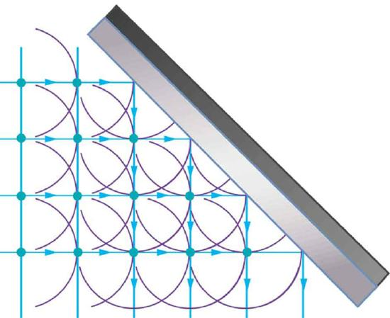
The law of refraction can be explained by applying Huygens’s principle to a wavefront passing from one medium to another (Figure . Each wavelet in the figure was emitted when the wavefront crossed the interface between the media. Since the speed of light is smaller in the second medium, the waves do not travel as far in a given time, and the new wavefront changes direction as shown. This explains why a ray changes direction to become closer to the perpendicular when light slows down. Snell’s law can be derived from the geometry in Figure but this is left as an exercise for ambitious readers.
![The figure shows two media separated by a horizontal line labeled surface. The upper medium is labeled medium one and the lower medium is labeled medium two. A vertical dotted line cuts through both media and is perpendicular to the surface. The point where the dotted line crosses the surface between the media will be called the point of contact. In medium one, a ray pointing down and to the right makes an abrupt turn at the point of contact. The path of the ray makes an angle theta sub one with the dotted line in medium one. In medium two, the ray leaves the point of contact and follows a path that makes an angle theta sub two with the dotted line in medium two, where theta sub two is less than theta sub one. We will call these the incident ray and the refracted ray, respectively. Thus, the refracted ray is closer to being vertical than the incident ray. Three line segments, labeled wavefront, are drawn perpendicular to the incident ray and the refracted ray. These line segments are equally spaced for both rays, but the three line segments that cross the incident ray are shorter and more widely spaced than the three line segments that cross the refracted ray. The separation of these line segments is labeled v sub one t for the incident ray and v sub two t for the refracted ray, with v sub two t being less than v sub one t.](images/ch27/fig27-7-the-figure-shows-two-media-separated-by-.jpg)
What happens when a wave passes through an opening, such as light shining through an open door into a dark room? For light, we expect to see a sharp shadow of the doorway on the floor of the room, and we expect no light to bend around corners into other parts of the room. When sound passes through a door, we expect to hear it everywhere in the room and, thus, expect that sound spreads out when passing through such an opening (Figure . What is the difference between the behavior of sound waves and light waves in this case? The answer is that light has very short wavelengths and acts like a ray. Sound has wavelengths on the order of the size of the door and bends around corners (for frequency of 1000 Hz, \(\lambda = c/f = \left( 330 m/s \right) / \left( 1000 s^{-1} \right) = 0.33m\), about three times smaller than the width of the doorway).
![Part a of the figure is a view from above of a diagram of a wall in which is cut an open door. The wall extends from the bottom of the diagram to the top, and the door forms a gap in the wall. The door itself is opened to the left and is positioned about forty five degrees from the wall on which it pivots. From the left comes a bright light, which is labeled small lambda, and the door and wall create sharp shadows by blocking this light. The edges of these shadows are labeled straight-edge shadows. Some of the light passes through the open doorway. Part b of the figure shows a similar diagram. A line parallel to the wall approaches the wall from the left and is labeled plane wavefront of sound. There are five dots evenly spaced across the open doorway, labeled one through five. Semicircles appear to the right of these dots entering the room to the right of the wall. Bracketing all these semicircles is a line that has the form of closing square bracket with rounded corners. This line is labeled sound. There are five rays shown pointing from the bracketing line into the room to the right of the wall. Three of these rays point horizontally to the right, one ray points upward and to the right, and the last ray points downward and to the right. This last ray points to the ear of a person who we see from above and who is labeled listener. The diagram indicates that the listener hears sound around the corner of the door.](images/ch27/fig27-8-part-a-of-the-figure-is-a-view-from-abov.jpg)
If we pass light through smaller openings, often called slits, we can use Huygens’s principle to see that light bends as sound does (Figure . The bending of a wave around the edges of an opening or an obstacle is calleddiffraction. Diffraction is a wave characteristic and occurs for all types of waves. If diffraction is observed for some phenomenon, it is evidence that the phenomenon is a wave.
![Three related diagrams showing how waves spread out when passing through various-size openings. The first diagram shows wavefronts passing through an opening that is wide compared to the distance between successive wavefronts. The wavefronts that emerge on the other side of the opening have minor bending along the edges. The second diagram shows wavefronts passing through a smaller opening. The waves experience more bending. The third diagram shows wavefronts passing through an opening that has a size similar to the spacing between wavefronts. These waves show significant bending.](images/ch27/fig27-9-three-related-diagrams-showing-how-waves.jpg)
📖 OpenStax College Physics, Section 27.2. openstax.org · CC BY 4.0
- Explain the phenomena of interference.
- Define constructive interference for a double slit and destructive interference for a double slit.
Although Christiaan Huygens thought that light was a wave, Isaac Newton did not. Newton felt that there were other explanations for color, and for the interference and diffraction effects that were observable at the time. Owing to Newton’s tremendous stature, his view generally prevailed. The fact that Huygens’s principle worked was not considered evidence that was direct enough to prove that light is a wave. The acceptance of the wave character of light came many years later when, in 1801, the English physicist and physician Thomas Young (1773–1829) did his now-classic double slit experiment (Figure .
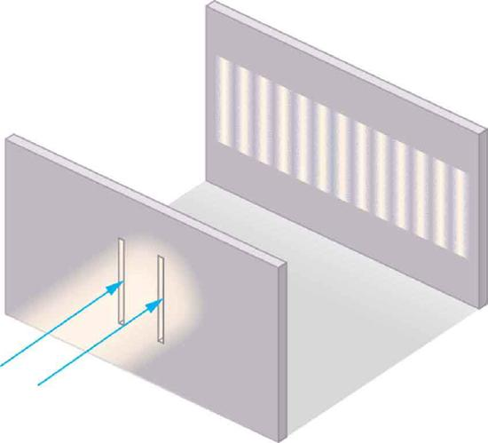
Why do we not ordinarily observe wave behavior for light, such as observed in Young’s double slit experiment? First, light must interact with something small, such as the closely spaced slits used by Young, to show pronounced wave effects. Furthermore, Young first passed light from a single source (the Sun) through a single slit to make the light somewhat coherent. Bycoherent, we mean waves are in phase or have a definite phase relationship.Incoherentmeans the waves have random phase relationships. Why did Young then pass the light through a double slit? The answer to this question is that two slits provide two coherent light sources that then interfere constructively or destructively. Young used sunlight, where each wavelength forms its own pattern, making the effect more difficult to see. We illustrate the double slit experiment with monochromatic (single \(\lambda\)) light to clarify the effect. Figure shows the pure constructive and destructive interference of two waves having the same wavelength and amplitude.
![Figure a shows three sine waves with the same wavelength arranged one above the other. The peaks and troughs of each wave are aligned with those of the other waves. The top two waves are labeled wave one and wave two and the bottom wave is labeled resultant. The amplitude of waves one and two are labeled x and the amplitude of the resultant wave is labeled two x. Figure b shows a similar situation, except that the peaks of wave two now align with the troughs of wave one. The resultant wave is now a straight horizontal line on the x axis; that is, the line y equals zero.](images/ch27/fig27-11-figure-a-shows-three-sine-waves-with-the.jpg)
When light passes through narrow slits, it is diffracted into semicircular waves, as shown in Figure \(\PageIndex{3a}\). Pure constructive interference occurs where the waves are crest to crest or trough to trough. Pure destructive interference occurs where they are crest to trough. The light must fall on a screen and be scattered into our eyes for us to see the pattern. An analogous pattern for water waves is shown in Figure \(\PageIndex{3b}\). Note that regions of constructive and destructive interference move out from the slits at well-defined angles to the original beam. These angles depend on wavelength and the distance between the slits, as we shall see below.
![The figure contains three parts. The first part is a drawing that shows parallel wavefronts approaching a wall from the left. Crests are shown as continuous lines, and troughs are shown as dotted lines. Two light rays pass through small slits in the wall and emerge in a fan-like pattern from two slits. These lines fan out to the right until they hit the right-hand wall. The points where these fan lines hit the right-hand wall are alternately labeled min and max. The min points correspond to lines that connect the overlapping crests and troughs, and the max points correspond to the lines that connect the overlapping crests. The second drawing is a view from above of a pool of water with semicircular wavefronts emanating from two points on the left side of the pool that are arranged one above the other. These semicircular waves overlap with each other and form a pattern much like the pattern formed by the arcs in the first image. The third drawing shows a vertical dotted line, with some dots appearing brighter than other dots. The brightness pattern is symmetric about the midpoint of this line. The dots near the midpoint are the brightest. As you move from the midpoint up, or down, the dots become progressively dimmer until there seems to be a dot missing. If you progress still farther from the midpoint, the dots appear again and get brighter, but are much less bright than the central dots. If you progress still farther from the midpoint, the dots get dimmer again and then disappear again, which is where the dotted line stops.](images/ch27/fig27-12-the-figure-contains-three-parts-the-firs.jpg)
To understand the double slit interference pattern, we consider how two waves travel from the slits to the screen, as illustrated in Figure . Each slit is a different distance from a given point on the screen. Thus different numbers of wavelengths fit into each path. Waves start out from the slits in phase (crest to crest), but they may end up out of phase (crest to trough) at the screen if the paths differ in length by half a wavelength, interfering destructively as shown in Figure \(\PageIndex{4a}\). If the paths differ by a whole wavelength, then the waves arrive in phase (crest to crest) at the screen, interfering constructively as shown in Figure \(\PageIndex{4b}\). More generally, if the paths taken by the two waves differ by any half-integral number of wavelengths [ \( \left( 1/2 \right) \lambda , \left(3/2 \right) \lambda , \left( 5/2 \right) \lambda,\) etc.], then destructive interference occurs. Similarly, if the paths taken by the two waves differ by any integral number of wavelengths (\( \lambda , 2\lambda , 3\lambda \), etc.), then constructive interference occurs.
![Both parts of the figure show a schematic of a double slit experiment. Two waves, each of which is emitted from a different slit, propagate from the slits to the screen. In the first schematic, when the waves meet on the screen, one of the waves is at a maximum whereas the other is at a minimum. This schematic is labeled dark (destructive interference). In the second schematic, when the waves meet on the screen, both waves are at a minimum.. This schematic is labeled bright (constructive interference).](images/ch27/fig27-13-both-parts-of-the-figure-show-a-schemati.jpg)
TAKE-HOME EXPERIMENT: USING FINGERS AS SLITS
Look at a light, such as a street lamp or incandescent bulb, through the narrow gap between two fingers held close together. What type of pattern do you see? How does it change when you allow the fingers to move a little farther apart? Is it more distinct for a monochromatic source, such as the yellow light from a sodium vapor lamp, than for an incandescent bulb?
Figure shows how to determine the path length difference for waves traveling from two slits to a common point on a screen. If the screen is a large distance away compared with the distance between the slits, then the angle \(\theta\) between the path and a line from the slits to the screen is nearly the same for each path. The difference between the paths is shown in the figure; simple trigonometry shows it to be \(d \sin{\theta}\), where \(d\) is the distance between the slits. To obtainconstructive interference for a double slit, the path length difference must be an integral multiple of the wavelength, or
Similarly, to obtaindestructive interference for a double slit, the path length difference must be a half-integral multiple of the wavelength, or
where \(\lambda\) is the wavelength of the light, \(d\) is the distance between slits, and \(\theta\) is the angle from the original direction of the beam as discussed above. We call \(m\) theorderof the interference. For example, \(m=4\) is fourth-order interference.
![The figure is a schematic of a double slit experiment, with the scale of the slits enlarged to show the detail. The two slits are on the left, and the screen is on the right. The slits are represented by a thick vertical line with two gaps cut through it a distance d apart. Two rays, one from each slit, angle up and to the right at an angle theta above the horizontal. At the screen, these rays are shown to converge at a common point. The ray from the upper slit is labeled l sub one, and the ray from the lower slit is labeled l sub two. At the slits, a right triangle is drawn, with the thick line between the slits forming the hypotenuse. The hypotenuse is labeled d, which is the distance between the slits. A short piece of the ray from the lower slit is labeled delta l and forms the short side of the right triangle. The long side of the right triangle is formed by a line segment that goes downward and to the right from the upper slit to the lower ray. This line segment is perpendicular to the lower ray, and the angle it makes with the hypotenuse is labeled theta. Beneath this triangle is the formula delta l equals d sine theta.](images/ch27/fig27-14-the-figure-is-a-schematic-of-a-double-sl.jpg)
The equations for double slit interference imply that a series of bright and dark lines are formed. For vertical slits, the light spreads out horizontally on either side of the incident beam into a pattern called interference fringes, illustrated in Figure . The intensity of the bright fringes falls off on either side, being brightest at the center. The closer the slits are, the more is the spreading of the bright fringes. We can see this by examining the Equation \ref{27.4.1}.
For fixed \(\lambda\) and \(m\), the smaller \(d\) is, the larger \(\theta\) must be, since \(\sin{\theta} = m \lambda / d\). This is consistent with our contention that wave effects are most noticeable when the object the wave encounters (here, slits a distance \(d\) apart) is small. Small \(d\) gives large \(\theta\), hence a large effect.
![The figure consists of two parts arranged side-by-side. The diagram on the left side shows a double slit arrangement along with a graph of the resultant intensity pattern on a distant screen. The graph is oriented vertically, so that the intensity peaks grow out and to the left from the screen. The maximum intensity peak is at the center of the screen, and some less intense peaks appear on both sides of the center. These peaks become progressively dimmer upon moving away from the center, and are symmetric with respect to the central peak. The distance from the central maximum to the first dimmer peak is labeled y sub one, and the distance from the central maximum to the second dimmer peak is labeled y sub two. The illustration on the right side shows thick bright horizontal bars on a dark background. Each horizontal bar is aligned with one of the intensity peaks from the first figure.](images/ch27/fig27-15-the-figure-consists-of-two-parts-arrange.jpg)
Suppose you pass light from a He-Ne laser through two slits separated by 0.0100 mm and find that the third bright line on a screen is formed at an angle of \(10.95^{\circ}\) relative to the incident beam. What is the wavelength of the light?
The third bright line is due to third-order constructive interference, which means that \(m=3\). We are given \(d = 0.0100 mm\) and \(\theta = 10.95^{\circ}\). The wavelength can thus be found using the equation \(d \sin{\theta} = m \lambda\) for constructive interference.
The equation is \(d \sin{\theta} = m \lambda\). Solving for the wavelength \(\lambda\) gives
Substituting known values yields
To three digits, this is the wavelength of light emitted by the common He-Ne laser. Not by coincidence, this red color is similar to that emitted by neon lights. More important, however, is the fact that interference patterns can be used to measure wavelength. Young did this for visible wavelengths. This analytical technique is still widely used to measure electromagnetic spectra. For a given order, the angle for constructive interference increases with \(\lambda\), so that spectra (measurements of intensity versus wavelength) can be obtained.
Interference patterns do not have an infinite number of lines, since there is a limit to how big \(m\) can be. What is the highest-order constructive interference possible with the system described in the preceding example?
Strategy and Concept:
The equation \(d \sin{\theta} = m \lambda \left( for m = 0,1,-1,2,-2,...\right)\) describes constructive interference. For fixed values of \(d\) and \(\lambda\), the larger \(m\) is, the larger \(\sin{\theta}\) is. However, the maximum value that \(\sin{\theta}\) can have is 1, for an angle of \(90^{\circ}\). (Larger angles imply that light goes backward and does not reach the screen at all.) Let us find which \(m\) corresponds to this maximum diffraction angle.
Solving the equation \(d\sin{\theta} = m \lambda\) for \(m\) gives:
Taking \(\sin{\theta} = 1\) and substituting the values of \(d\) and \(\lambda\) from the preceding example gives
Therefore, the largest integer \(m\) can be is 15, or
The number of fringes depends on the wavelength and slit separation. The number of fringes will be very large for large slit separations. However, if the slit separation becomes much greater than the wavelength, the intensity of the interference pattern changes so that the screen has two bright lines cast by the slits, as expected when light behaves like a ray. We also note that the fringes get fainter further away from the center. Consequently, not all 15 fringes may be observable.
📖 OpenStax College Physics, Section 27.3. openstax.org · CC BY 4.0
- Discuss the pattern obtained from diffraction grating.
- Explain diffraction grating effects.
An interesting thing happens if you pass light through a large number of evenly spaced parallel slits, called adiffraction grating. An interference pattern is created that is very similar to the one formed by a double slit (see Figure 1). A diffraction grating can be manufactured by scratching glass with a sharp tool in a number of precisely positioned parallel lines, with the untouched regions acting like slits. These can be photographically mass produced rather cheaply. Diffraction gratings work both for transmission of light, as in Figure 1, and for reflection of light, as on butterfly wings and the Australian opal in Figure 2 or the CD pictured in the opening photograph of this chapter. In addition to their use as novelty items, diffraction gratings are commonly used for spectroscopic dispersion and analysis of light. What makes them particularly useful is the fact that they form a sharper pattern than double slits do. That is, their bright regions are narrower and brighter, while their dark regions are darker. Figure 3 shows idealized graphs demonstrating the sharper pattern. Natural diffraction gratings occur in the feathers of certain birds. Tiny, finger-like structures in regular patterns act as reflection gratings, producing constructive interference that gives the feathers colors not solely due to their pigmentation. This is called iridescence.
![On the left side of the figure is a diffraction grating represented by a vertical bar with five horizontal slits cut through it. A single horizontal arrow, representing white light, points at the center slit from the left side. On the right side, five arrows spread symmetrically above and below the horizontal centerline. The arrow that is on the horizontal centerline points at a white block labeled central white. The first arrows above and below the centerline point to rainbow-colored blocks labeled first-order rainbow. The second arrows above and below the centerline point to slightly faded rainbow-colored blocks that are labeled second-order rainbow.](images/ch27/fig27-16-on-the-left-side-of-the-figure-is-a-diff.jpg)
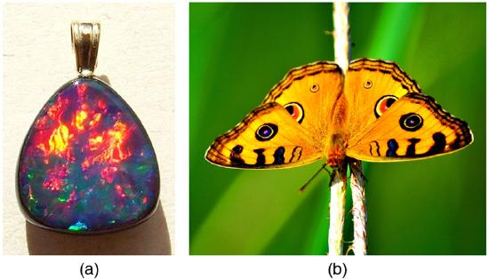
![The upper graph, which is labeled double slit, shows a smooth curve similar to a sine curve that is shifted up so that its minimum value is zero. Three peaks are shown: the middle peak is labeled m equals zero and the left and right peaks are labeled m equals one. The lower graph, which is labeled grating, is aligned under the upper graph and also shows three peaks, with each peak aligned directly underneath the peaks in the upper graph. These three peaks are also labeled m equals zero or one, as in the upper graph. However, the peaks in the lower graph are much narrower and there are lots of small peaks appearing between large peaks.](images/ch27/fig27-18-the-upper-graph-which-is-labeled-double-.jpg)
The analysis of a diffraction grating is very similar to that for a double slit (see Figure 4). As we know from our discussion of double slits in "Young's Double Slit Experiment," light is diffracted by each slit and spreads out after passing through. Rays traveling in the same direction (at an angle \(\theta\) relative to the incident direction) are shown in the figure. Each of these rays travels a different distance to a common point on a screen far away. The rays start in phase, and they can be in or out of phase when they reach a screen, depending on the difference in the path lengths traveled. As seen in the figure, each ray travels a distance \(d\sin{\theta}\) different from that of its neighbor, where \(d\) is the distance between slits. If this distance equals an integral number of wavelengths, the rays all arrive in phase, and constructive interference (a maximum) is obtained. Thus, the condition necessary to obtainconstructive interference for a diffraction gratingis \[d\sin{\theta} = m \lambda, for m=0,1,-1,2,-2,...\left(constructive\right)\label{27.5.1}\] where \(d\) is the distance between slits in the grating, \(\lambda\) is the wavelength of light, and \(m\) is the order of the maximum. Note that this is exactly the same equation as for double slits separated by \(d\). However, the slits are usually closer in diffraction gratings than in double slits, producing fewer maxima at larger angles.
![The figure shows a schematic of a diffraction grating, which is represented by a vertical black line into which are cut five small gaps. The gaps are evenly spaced a distance d apart. From the left five rays arrive, with one ray arriving at each gap. To the right of the line with the gaps the rays all point down and to the right at an angle theta below the horizontal. At each gap a triangle is formed where the hypotenuse is length d, one angle is theta, and the side opposite theta is labeled delta l. At the top is written delta l equals d sine theta.](images/ch27/fig27-19-the-figure-shows-a-schematic-of-a-diffra.jpg)
Where are diffraction gratings used? Diffraction gratings are key components of monochromators used, for example, in optical imaging of particular wavelengths from biological or medical samples. A diffraction grating can be chosen to specifically analyze a wavelength emitted by molecules in diseased cells in a biopsy sample or to help excite strategic molecules in the sample with a selected frequency of light. Another vital use is in optical fiber technologies where fibers are designed to provide optimum performance at specific wavelengths. A range of diffraction gratings are available for selecting specific wavelengths for such use.
TAKE-HOME EXPERIMENT: RAINBOWS ON A CD
The spacing \(d\)) of the grooves in a CD or DVD can be well determined by using a laser and the equation \(d\sin{\theta} = m \lambda, for m = 0,1,-1,2,-2,...\) However, we can still make a good estimate of this spacing by using white light and the rainbow of colors that comes from the interference. Reflect sunlight from a CD onto a wall and use your best judgment of the location of a strongly diffracted color to find the separation \(d\).
Diffraction gratings with 10,000 lines per centimeter are readily available. Suppose you have one, and you send a beam of white light through it to a screen 2.00 m away. (a) Find the angles for the first-order diffraction of the shortest and longest wavelengths of visible light (380 and 760 nm). (b) What is the distance between the ends of the rainbow of visible light produced on the screen for first-order interference? (See Figure.)
![The image shows a vertical black bar at the left labeled grating. From the midpoint of this bar four lines fan out to the right, with two lines angled above the horizontal centerline and two lines angled symmetrically below the horizontal centerline. These four lines hit a vertical black line to the right that is labeled screen. On the screen between the two upper lines is a rainbow region, with violet nearer the centerline and red farther from the centerline. The same is true for the two lower lines, except that they are below the centerline instead of above. The distance from the centerline to the upper violet zone is labeled y sub v equals question mark and the distance from the centerline to the upper red zone is labeled y sub r equals question mark. The angle between the centerline and the line leading to the upper violet zone is labeled theta V equals question mark and the angle between the line leading to the upper red zone is labeled theta R equals question mark. The distance between the grating and the screen is labeled x equals two point zero zero meters.](images/ch27/fig27-20-the-image-shows-a-vertical-black-bar-at-.jpg)
The angles can be found using the equation \[d\sin{\theta} = m \lambda, for m = 0,1,-1,2,-2,...\label{27.5.1}\] once a value for the slit spacing \(d\) has been determined. Since there are 10,000 lines per centimeter, each line is separated by \(1/10,000\) of a centimeter. Once the angles are found, the distances along the screen can be found using simple trigonometry.
The distance between slits is \(d = \left(1 cm\right) / 10,000 = 1.00 \times 10^{-4} cm\) or \(1.00 \times 10^{-6} m\). Let us call the two angles \(\theta_{V}\) for violet (380 nm) and \(\theta_{R}\) for red (760 nm). Solving the equation \(d\sin{\theta_{V}} = m \lambda\) for \(\sin{\theta_{V}}\), \[\sin{\theta_{V}} = \frac{m \lambda v}{d}, \label{27.5.2}\] where \(m = 1\) for first order and \(\lambda_{v} = 380 nm = 3.80 \times 10^{-7} m\). Substituting these values gives \[\sin{\theta_{v}} = \frac{3.80 \times 10^{-7} m}{1.00 \times 10^{-6} m} = 0.380.\] Thus the angle \(\theta_{v}\) is \[\theta_{v} = \sin^{-1}{0.380} = 22.33^{\circ}.\] Similarly, \[\sin{\theta_{R}} = \frac{7.60 \times 10^{-7} m}{1.00 \times 10^{-6} m}.\] Thus the angle \(\theta_{R}\) is \[\theta_{R} = \sin^{-1}{0.760} = 49.46^{\circ}.\] Notice that in both equations, we reported the results of these intermediate calculations to four significant figures to use with the calculation in part (b).
The distances on the screen are labeled \(y_{v}\) and \(y_{R}\) in the figure. Noting that \(\tan{\theta} = y/x\), we can solve for \(y_{v}\) and \(y_{R}\). That is, \[y_{v} = x \tan{\theta_{v}} = \left( 2.00 m \right) \left(\tan{22.33^{\circ}}\right) = 0.815m \label{25.7.3}\] and \[y_{R} = x \tan{\theta_{R}} = \left( 2.00 m \right) \left( \tan{49.46^{\circ}} \right) = 2.338 m \label{25.7.4}.\] The distance between them is therefore \[y_{R} - y_{v} = 1.52 m.\]
The large distance between the red and violet ends of the rainbow produced from the white light indicates the potential this diffraction grating has as a spectroscopic tool. The more it can spread out the wavelengths (greater dispersion), the more detail can be seen in a spectrum. This depends on the quality of the diffraction grating—it must be very precisely made in addition to having closely spaced lines.
📖 OpenStax College Physics, Section 27.4. openstax.org · CC BY 4.0
- Discuss the single slit diffraction pattern.
Light passing through a single slit forms a diffraction pattern somewhat different from those formed by double slits or diffraction gratings. Figure 1 shows a single slit diffraction pattern. Note that the central maximum is larger than those on either side, and that the intensity decreases rapidly on either side. In contrast, a diffraction grating produces evenly spaced lines that dim slowly on either side of center.
![Part a of the figure shows a slit in a vertical bar. To the right of the bar is a graph of intensity versus height. The graph is turned ninety degrees counterclockwise so that the intensity scale increases to the left and the height increases as you go up the page. Just in front of the gap, a strong central peak extends leftward from the graph’s baseline, and many smaller satellite peaks appear above and below this central peak. Part b of the figure shows a drawing of the two-dimensional intensity pattern that is observed from single slit diffraction. The central stripe is quite broad compared to the satellite stripes, and there are dark areas between all the stripes.](images/ch27/fig27-21-part-a-of-the-figure-shows-a-slit-in-a-v.jpg)
The analysis of single slit diffraction is illustrated in Figure 2. Here we consider light coming from different parts of thesameslit. According to Huygens’s principle, every part of the wavefront in the slit emits wavelets. These are like rays that start out in phase and head in all directions. (Each ray is perpendicular to the wavefront of a wavelet.) Assuming the screen is very far away compared with the size of the slit, rays heading toward a common destination are nearly parallel. When they travel straight ahead, as in Figure 2a, they remain in phase, and a central maximum is obtained. However, when rays travel at an angle \(\theta\) relative to the original direction of the beam, each travels a different distance to a common location, and they can arrive in or out of phase. In Figure 2b, the ray from the bottom travels a distance of one wavelength \(\lambda\) farther than the ray from the top. Thus a ray from the center travels a distance \(\lambda / 2\) farther than the one on the left, arrives out of phase, and interferes destructively. A ray from slightly above the center and one from slightly above the bottom will also cancel one another. In fact, each ray from the slit will have another to interfere destructively, and a minimum in intensity will occur at this angle. There will be another minimum at the same angle to the right of the incident direction of the light.
![The figure shows four schematics of a ray bundle passing through a single slit. The slit is represented as a gap in a vertical line. In the first schematic, the ray bundle passes horizontally through the slit. This schematic is labeled theta equals zero and bright. The second schematic is labeled dark and shows the ray bundle passing through the slit an angle of roughly fifteen degrees above the horizontal. The path length difference between the top and bottom ray is lambda, and the schematic is labeled sine theta equals lambda over d. The third schematic is labeled bright and shows the ray bundle passing through the slit at an angle of about twenty five degrees above the horizontal. The path length difference between the top and bottom rays is three lambda over two d, and the schematic is labeled sine theta equals three lambda over two d. The final schematic is labeled dark and shows the ray bundle passing through the slit at an angle of about forty degrees above the horizontal. The path length difference between the top and bottom rays is two lambda over d, and the schematic is labeled sine theta equals two lambda over d.](images/ch27/fig27-22-the-figure-shows-four-schematics-of-a-ra.jpg)
At the larger angle shown in Figure 2c, the path lengths differ by \(3 \lambda / 2\) for rays from the top and bottom of the slit. One ray travels a distance \(\lambda\) different from the ray from the bottom and arrives in phase, interfering constructively. Two rays, each from slightly above those two, will also add constructively. Most rays from the slit will have another to interfere with constructively, and a maximum in intensity will occur at this angle. However, all rays do not interfere constructively for this situation, and so the maximum is not as intense as the central maximum. Finally, in Figure 2d, the angle shown is large enough to produce a second minimum. As seen in the figure, the difference in path length for rays from either side of the slit is \(D \sin{\theta}\), and we see that a destructive minimum is obtained when this distance is an integral multiple of the wavelength.
![The graph shows the variation of intensity as a function of sine theta. The curve has a strong peak at sine theta equals zero, then has small oscillations spreading symmetrically to the left and right of this central peak. The oscillations all appear to be of the same height. Between each oscillation, the curve appears to go to zero, and each zero is labeled. The first zero to the left of the main peak is labeled minus lambda over d and the first zero to the right is labeled lambda over d. The second zero to the left is labeled minus two lambda over d and the second zero to the right is labeled two lambda over d. The third zero to the left is labeled minus three lambda over d and the third zero to the right is labeled three lambda over d.](images/ch27/fig27-23-the-graph-shows-the-variation-of-intensi.jpg)
Thus, to obtaindestructive interference for a single slit, \[D \sin{\theta} = m \lambda,~for~m = 1, -1, 2, -2, 3,... \left(destructive\right), \label{27.6.1}\] where \(D\) is the slit width, \(\lambda\) is the light's wavelength, \(\theta\) is the angle relative to the original direction of the light, and \(m\) is the order of the minimum. Figure 3 shows a graph of intensity for single slit interference, and it is apparent that the maxima on either side of the central maximum are much less intense and not as wide. This is consistent with the illustration in Figure 1b.
Visible light of wavelength 550 nm falls on a single slit and produces its second diffraction minimum at an angle of \(45.0^{\circ}\) relative to the incident direction of the light.
![The schematic shows a single slit to the left and the resulting intensity pattern on a screen is graphed on the right. The single slit is represented by a gap of size d in a vertical line. A ray of wavelength lambda enters the gap from the left, then five rays leave from the gap center and head to the right. One ray continues on the horizontal centerline of the schematic. Two rays angle upward: the first at an unknown angle theta one above the horizontal and the second at an angle theta two equals forty five degrees above the horizontal. The final two rays angle downward at the same angles, so that they are symmetric about the horizontal with respect to the two rays that angle upward. The intensity on the screen is a maximum where the central ray hits the screen, whereas it is a minimum where the angled rays hit the screen.](images/ch27/fig27-24-the-schematic-shows-a-single-slit-to-the.jpg)
From the given information, and assuming the screen is far away from the slit, we can use the equation \(D \sin{\theta} = m \lambda\) first to find \(D\), and again to find the angle for the first minimum \(\theta_{1}\).
We are given that \(\lambda = 550 nm\), \(m =2\), and \(\theta_{2} = 45.0^{\circ}\). Solving the equation \(D = \sin{\theta} = m \lambda\) for \(D\) and substituting known values gives \[D = \frac{m \lambda}{\sin{\theta_{2}}} = \frac{2\left(550 nm\right)}{\sin{45.0^{\circ}}} \label{27.6.2}\] \[= \frac{1100 \times 10^{-9}}{0.707}\] \[=1.56 \times 10^{-6}.\]
Solving the equation \(D = \sin{\theta} = m \lambda\) for \(\sin{\theta_{1}}\) and substituting known values gives \[\sin_{\theta_{1}} = \frac{m \lambda}{D} = \frac{1 \left(550 \times 10^{-9} m \right)}{1.56 \times 10^{-6}}. \label{27.6.3}\] Thus the angle \(\theta_{1}\) is \[\theta_{1} = \sin{0.354}^{-1} = 20.7^{\circ} \label{27.6.4}\]
We see that the slit is narrow (it is only a few times greater than the wavelength of light). This is consistent with the fact that light must interact with an object comparable in size to its wavelength in order to exhibit significant wave effects such as this single slit diffraction pattern. We also see that the central maximum extends \(20.7^{\circ}\) on either side of the original beam, for a width of about \(41^{\circ}\). The angle between the first and second minima is only about \(24^{\circ} \left(45.0^{\circ} - 20.7^{\circ}\right)\). Thus the second maximum is only about half as wide as the central maximum.
📖 OpenStax College Physics, Section 27.5. openstax.org · CC BY 4.0
- Discuss the Rayleigh criterion.
Light diffracts as it moves through space, bending around obstacles, interfering constructively and destructively. While this can be used as a spectroscopic tool -- a diffraction grating disperses light according to wavelength, for example, and is used to produce spectra -- diffraction also limits the detail we can obtain in images. Figure \(\PageIndex{1a}\) shows the effect of passing light through a small circular aperture. Instead of a bright spot with sharp edges, a spot with a fuzzy edge surrounded by circles of light is obtained. This pattern is caused by diffraction similar to that produced by a single slit. Light from different parts of the circular aperture interferes constructively and destructively. The effect is most noticeable when the aperture is small, but the effect is there for large apertures, too.
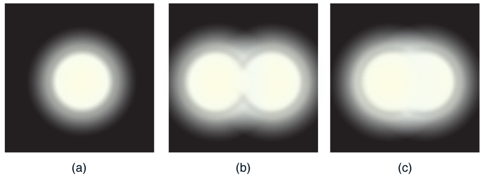
How does diffraction affect the detail that can be observed when light passes through an aperture? Figure \(\PageIndex{1b}\) shows the diffraction pattern produced by two point light sources that are close to one another. The pattern is similar to that for a single point source, and it is just barely possible to tell that there are two light sources rather than one. If they were closer together, as in Figure , we could not distinguish them, thus limiting the detail or resolution we can obtain. This limit is an inescapable consequence of the wave nature of light.
There are many situations in which diffraction limits the resolution. The acuity of our vision is limited because light passes through the pupil, the circular aperture of our eye. Be aware that the diffraction-like spreading of light is due to the limited diameter of a light beam, not the interaction with an aperture. Thus light passing through a lens with a diameter \(D\) shows this effect and spreads, blurring the image, just as light passing through an aperture of diameter \(D\) does. So diffraction limits the resolution of any system having a lens or mirror. Telescopes are also limited by diffraction, because of the finite diameter \(D\) of their primary mirror.
TAKE-HOME EXPERIMENT: Resolution of the Eye
Draw two lines on a white sheet of paper (several mm apart). How far away can you be and still distinguish the two lines? What does this tell you about the size of the eye’s pupil? Can you be quantitative? (The size of an adult’s pupil is discussed in "Physics of the Eye."
Just what is the limit? To answer that question, consider the diffraction pattern for a circular aperture, which has a central maximum that is wider and brighter than the maxima surrounding it (similar to a slit) (Figure \(\PageIndex{2a}\)). It can be shown that, for a circular aperture of diameter \(D\), the first minimum in the diffraction pattern occurs at \(\theta = 1.22 \lambda / D\) (providing the aperture is large compared with the wavelength of light, which is the case for most optical instruments). The accepted criterion for determining the diffraction limit to resolution based on this angle was developed by Lord Rayleigh in the 19th century. TheRayleigh criterionfor the diffraction limit to resolution states thattwo images are just resolvable when the center of the diffraction pattern of one is directly over the first minimum of the diffraction pattern of the other.See Figure 2b. The first minimum is at an angle of \(\theta = 1.22 \lambda / D\), so that two point objects are just resolvable if they are separated by the angle
where \(\lambda\) is the wavelength of light (or other electromagnetic radiation) and \(D\) is the diameter of the aperture, lens, mirror, etc., with which the two objects are observed. In this expression, \(\theta\) has units of radians.
![Part a of the figure shows a graph of intensity versus theta. The curve has a central maximum at theta equals zero and its first minima occur at plus one point two two lambda over D and minus one point two two lambda over D. Farther from the central peak, several small peaks occur, but they are much much smaller than the central maximum. Part b of the figure shows a drawing in which two light bulbs, labeled object one and object two, appear in the foreground positioned next to each other. Two rays of light, one from each light bulb, pass through a pinhole aperture and continue on to strike a screen that is farther back in the drawing. On the screen is an x y plot of the two resulting intensity patterns. Because the rays cross in the pinhole, the ray from the left light bulb makes the right-hand intensity pattern, and vice versa. The angle between the rays coming from the light bulbs is labeled theta min. Each ray hits the screen at the central maximum of the intensity pattern that corresponds to the object from which the ray came. The central maximum of object one is at the same position as the first minimum of object two, and vice versa.](images/ch27/fig27-26-part-a-of-the-figure-shows-a-graph-of-in.jpg)
All attempts to observe the size and shape of objects are limited by the wavelength of the probe. Even the small wavelength of light prohibits exact precision. When extremely small wavelength probes as with an electron microscope are used, the system is disturbed, still limiting our knowledge, much as making an electrical measurement alters a circuit. Heisenberg’s uncertainty principle asserts that this limit is fundamental and inescapable, as we shall see in quantum mechanics.
The primary mirror of the orbiting Hubble Space Telescope has a diameter of 2.40 m. Being in orbit, this telescope avoids the degrading effects of atmospheric distortion on its resolution.
The Rayleigh criterion stated in the equation \(\theta = 1.22 \frac{\lambda}{D}\) gives the smallest possible angle \(\theta\) between point sources, or the best obtainable resolution. Once this angle is found, the distance between stars can be calculated, since we are given how far away they are.
The Rayleigh criterion for the minimum resolvable angle is given by Equation \ref{27.7.1}
Entering known values gives
The distance \(s\) between two objects a distance \(r\) away and separated by an angle \(\theta\) is
Substituting known values gives
The angle found in part (a) is extraordinarily small (less than 1/50,000 of a degree), because the primary mirror is so large compared with the wavelength of light. As noticed, diffraction effects are most noticeable when light interacts with objects having sizes on the order of the wavelength of light. However, the effect is still there, and there is a diffraction limit to what is observable. The actual resolution of the Hubble Telescope is not quite as good as that found here. As with all instruments, there are other effects, such as non-uniformities in mirrors or aberrations in lenses that further limit resolution. However, Figure gives an indication of the extent of the detail observable with the Hubble because of its size and quality and especially because it is above the Earth’s atmosphere.
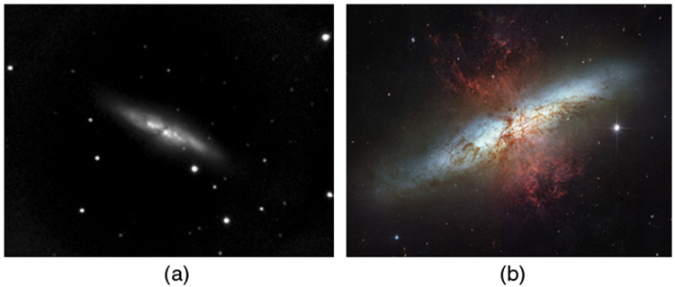
The answer in part (b) indicates that two stars separated by about half a light year can be resolved. The average distance between stars in a galaxy is on the order of 5 light years in the outer parts and about 1 light year near the galactic center. Therefore, the Hubble can resolve most of the individual stars in Andromeda galaxy, even though it lies at such a huge distance that its light takes 2 million years for its light to reach us. Figure shows another mirror used to observe radio waves from outer space.
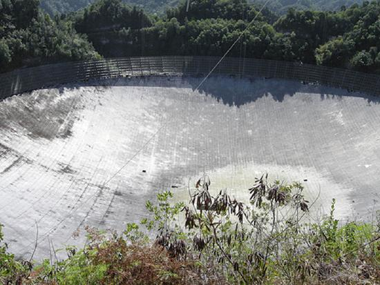
Diffraction is not only a problem for optical instruments but also for the electromagnetic radiation itself. Any beam of light having a finite diameter \(D\) and a wavelength \(\lambda\) exhibits diffraction spreading. The beam spreads out with an angle \(\theta\) given by the equation \(\theta = 1.22 \frac{\lambda}{D}\). Take, for example, a laser beam made of rays as parallel as possible (angles between rays as close to \(\theta = 0^{\circ}\) as possible) instead spreads out at an angle \(\theta = 1.22 \lambda / D\), where \(D\) is the diameter of the beam and \(lambda\) is its wavelength. This spreading is impossible to observe for a flashlight, because its beam is not very parallel to start with. However, for long-distance transmission of laser beams or microwave signals, diffraction spreading can be significant (Figure . To avoid this, we can increase \(D\). This is done for laser light sent to the Moon to measure its distance from the Earth. The laser beam is expanded through a telescope to make \(D\) much larger and \(\theta\) smaller.
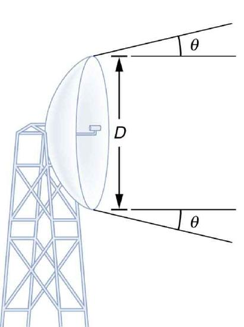
In most biology laboratories, resolution is presented when the use of the microscope is introduced. The ability of a lens to produce sharp images of two closely spaced point objects is called resolution. The smaller the distance \(x\) by which two objects can be separated and still be seen as distinct, the greater the resolution. The resolving power of a lens is defined as that distance \(x\). An expression for resolving power is obtained from the Rayleigh criterion. In Figure \(\PageIndex{6a}\) we have two point objects separated by a distance \(x\). According to the Rayleigh criterion, resolution is possible when the minimum angular separation is
where \(d\) is the distance between the specimen and the objective lens, and we have used the small angle approximation (i.e., we have assumed that \(x\) is much smaller than \(d\)), so that \(\tan{\theta} \approx \sin{\theta} \approx \theta\).
Therefore, the resolving power is
Another way to look at this is by re-examining the concept ofNumerical Aperture(\(NA\)) discussed previously. There, \(NA\) is a measure of the maximumacceptance angleat which the fiber will take light and still contain it within the fiber. Figure \(\PageIndex{6b}\) shows a lens and an object at point P. The \(NA\) here is a measure of the ability of the lens to gather light and resolve fine detail. The angle subtended by the lens at its focus is defined to be \(\theta = 2\alpha\). From the figure and again using the small angle approximation, we can write
The \(NA\) for a lens is \(NA = n \sin{\alpha}\), where \(n\) is the index of refraction of the medium between the objective lens and the object at point P.
From this definition for \(NA\), we can see that
In a microscope, \(NA\) is important because it relates to the resolving power of a lens. A lens with a large \(NA\) will be able to resolve finer details. Lenses with larger \(NA\) will also be able to collect more light and so give a brighter image. Another way to describe this situation is that the larger the \(NA\), the larger the cone of light that can be brought into the lens, and so more of the diffraction modes will be collected. Thus the microscope has more information to form a clear image, and so its resolving power will be higher.
![Part a of the figure shows two small objects arranged vertically a distance x one above the other on the left side of the schematic. On the right side, at a distance lowercase d from the two objects, is a vertical oval shape that represents a convex lens. The middle of the lens is on the horizontal bisector between the two points on the left. Two rays, one from each object on the left, leave the objects and pass through the center of the lens. The distance d is significantly longer than the distance x. Part b of the figure shows a horizontal oval representing a convex lens labeled microscope objective that is a distance lowercase d above a flat surface. The oval’s long axis is of length capital D. A point P is labeled on the plane directly below the center of the lens, and two rays leave this point. One ray extends to the left edge of the lens and the other ray extends to the right edge of the lens. The angle between these rays is labeled acceptance angle theta, and the half angle is labeled alpha. The distance lowercase d is longer than the distance capital D.](images/ch27/fig27-30-part-a-of-the-figure-shows-two-small-obj.jpg)
One of the consequences of diffraction is that the focal point of a beam has a finite width and intensity distribution. Consider focusing when only considering geometric optics, shown in Figure \(\PageIndex{6a}\). The focal point is infinitely small with a huge intensity and the capacity to incinerate most samples irrespective of the \(NA\) of the objective lens. For wave optics, due to diffraction, the focal point spreads to become a focal spot (Figure \(\PageIndex{7b}\)) with the size of the spot decreasing with increasing \(NA\). Consequently, the intensity in the focal spot increases with increasing \(NA\). The higher the \(NA\), the greater the chances of photodegrading the specimen. However, the spot never becomes a true point.
![The first schematic is labeled geometric optics focus. It shows an edge-on view of a thin lens that is vertical. The lens is represented by a thin ellipse. Two parallel horizontal rays impinge upon the lens from the left. One ray goes through the upper edge of the lens and is deviated downward at about a thirty degree angle below the horizontal. The other ray goes through the lower edge of the lens and is deviated upward at about a thirty degree angle above the horizontal. These two rays cross a point that is labeled focal point. The second schematic is labeled wave optics focus. It is similar to the first schematic, except that the rays do not quite cross at the focal point. Instead, they diverge away from each other at the same angle as they approached each other. The region of closest approach for the lines is called the focal region.](images/ch27/fig27-31-the-first-schematic-is-labeled-geometric.jpg)
📖 OpenStax College Physics, Section 27.6. openstax.org · CC BY 4.0
- Discuss the rainbow formation by thin films.
The bright colors seen in an oil slick floating on water or in a sunlit soap bubble are caused by interference. The brightest colors are those that interfere constructively. This interference is between light reflected from different surfaces of a thin film; thus, the effect is known asthin film interference. As noticed before, interference effects are most prominent when light interacts with something having a size similar to its wavelength. A thin film is one having a thickness \(t\) smaller than a few times the wavelength of light, \(\lambda\). Since color is associated indirectly with \(\lambda\) and since all interference depends in some way on the ratio of \(\lambda\) to the size of the object involved, we should expect to see different colors for different thicknesses of a film like in Figure .
What causes thin film interference? Figure 2 shows how light reflected from the top and bottom surfaces of a film can interfere. Incident light is only partially reflected from the top surface of the film (ray 1). The remainder enters the film and is itself partially reflected from the bottom surface. Part of the light reflected from the bottom surface can emerge from the top of the film (ray 2) and interfere with light reflected from the top (ray 1). Since the ray that enters the film travels a greater distance, it may be in or out of phase with the ray reflected from the top. However, consider for a moment, again, the bubbles in Figure . The bubbles are darkest where they are thinnest. Furthermore, if you observe a soap bubble carefully, you will note it gets dark at the point where it breaks. For very thin films, the difference in path lengths of ray 1 and ray 2 in Figure is negligible; so why should they interfere destructively and not constructively? The answer is that a phase change can occur upon reflection. The rule is as follows:
When light reflects from a medium having an index of refraction greater than that of the medium in which it is traveling, a \(180^{\circ}\) phase change (or a \(\lambda /2\)) occurs.
![The figure shows three materials, or media, stacked one upon the other. The topmost medium is labeled n one, the next is labeled n two and its thickness is t, and the lowest is labeled n three. A light ray labeled incident light starts in the n one medium and propagates down and to the right to strike the n one n two interface. The ray gets partially reflected and partially refracted. The partially reflected ray is labeled ray one. The refracted ray continues downward in the n two medium and is reflected back up from the n two n three interface. This reflected ray, labeled ray two, refracts again upon passing up through the n two n one interface and continues upward parallel to ray one. Ray one and ray two then enter an observer’s eye.](images/ch27/fig27-33-the-figure-shows-three-materials-or-medi.jpg)
In the film in Figure is a soap bubble (essentially water with air on both sides), then there is a \(\lambda / 2\) shift for ray 1 and none for ray 2. Thus, when the film is very thin, the path length difference between the two rays is negligible, they are exactly out of phase, and destructive interference will occur at all wavelengths and so the soap bubble will be dark here.
The thickness of the film relative to the wavelength of light is the other crucial factor in thin film interference. Ray 2 in Figure travels a greater distance than ray 1. For light incident perpendicular to the surface, ray 2 travels a distance approximately \(2t\) farther than Ray 1. When this distance is an integral or half-integral multiple of the wavelength in the medium (\(\lambda_{n} = \lambda / n\), where \(\lambda\) is the wavelength in vacuum and \(n\) is the index of refraction), constructive or destructive interference occurs, depending also on whether there is a phase change in either ray.
Sophisticated cameras use a series of several lenses. Light can reflect from the surfaces of these various lenses and degrade image clarity. To limit these reflections, lenses are coated with a thin layer of magnesium fluoride that causes destructive thin film interference. What is the thinnest this film can be, if its index of refraction is 1.38 and it is designed to limit the reflection of 550-nm light, normally the most intense visible wavelength? The index of refraction of glass is 1.52.
Refer to Figure and use \(n_{1} = 1.00\) for air, \(n_{2} = 1.38\), and \(n_{3} = 1.52\). Both ray 1 and ray 2 will have a \(\lambda / 2\) shift upon reflection. Thus, to obtain destructive interference, ray 2 will need to travel a half wavelength farther than ray 1. For rays incident perpendicularly, the path length difference is \(2t\).
To obtain destructive interference here,
where \(\lambda_{n_{2}}\) is the wavelength in the film and is given by \(\lambda_{n_{2}} = \frac{\lambda}{n_{2}}\).
Solving for \(t\) and entering known values yields
Films such as the one in this example are most effective in producing destructive interference when the thinnest layer is used, since light over a broader range of incident angles will be reduced in intensity. These films are called non-reflective coatings; this is only an approximately correct description, though, since other wavelengths will only be partially cancelled. Non-reflective coatings are used in car windows and sunglasses.
Thin film interference is most constructive or most destructive when the path length difference for the two rays is an integral or half-integral wavelength, respectively. That is, for rays incident perpendicularly, \(2t = \lambda_{n}, 2\lambda_{n}, 3\lambda_{n},...\) or \(2t = \lambda_{n}/2, 3\lambda_{n}/2, 5\lambda_{n}/2,...\) To know whether interference is constructive or destructive, you must also determine if there is a phase change upon reflection. Thin film interference thus depends on film thickness, the wavelength of light, and the refractive indices. For white light incident on a film that varies in thickness, you will observe rainbow colors of constructive interference for various wavelengths as the thickness varies.
Strategy and Concept:
Use Figure to visualize the bubble. Note that \(n_{1} = n_{3} = 1.00\) for air, and \(n_{2} = 1.333\) for soap (equivalent to water). There is a \(\lambda / 2\) shift for ray 1 reflected from the top surface of the bubble, and no shift for ray 2 reflected from the bottom surface. To get constructive interference, then, the path length difference (\(2t\)) must be a half-integral multiple of the wavelength -- the first three being \(\lambda_{n}/2, 3\lambda_{n}/2\), and \(5\lambda_{n}/2\). To get destructive interference, the path length difference must be an integral multiple of the wavelength -- the first three being \(0, \lambda_{n},\) and \(2\lambda_{n}\).
Constructive interferenceoccurs here when
The smallest constructive thickness \(t_{c}\) thus is
The next thickness that gives constructive interference is \(t'_{c} = 3\lambda_{n}/4\), so that
Finally, the third thickness producing constructive interference is \(t''_{c} \lt 5\lambda_{n} / 4\), so that
Fordestructive interference,the path length difference here is an integral multiple of the wavelength. The first occurs for zero thickness, since there is a phase change at the top surface. That is,
The first non-zero thickness producing destructive interference is
Substituting known values gives
\[t'_{d} = \frac{\lambda_{n}}{2} = \frac{\lambda / n}{2} = \frac{\left(650 nm \right) / 1.333}{2} \label{27.8.10}\] \[= 244 nm.\] Finally, the third destructive thickness is \(2t''_{d} = 2\lambda_{n}\), so that
If the bubble was illuminated with pure red light, we would see bright and dark bands at very uniform increases in thickness. First would be a dark band at 0 thickness, then bright at 122 nm thickness, then dark at 244 nm, bright at 366 nm, dark at 488 nm, and bright at 610 nm. If the bubble varied smoothly in thickness, like a smooth wedge, then the bands would be evenly spaced.
Another example of thin film interference can be seen when microscope slides are separated (Figure . The slides are very flat, so that the wedge of air between them increases in thickness very uniformly. A phase change occurs at the second surface but not the first, and so there is a dark band where the slides touch. The rainbow colors of constructive interference repeat, going from violet to red again and again as the distance between the slides increases. As the layer of air increases, the bands become more difficult to see, because slight changes in incident angle have greater effects on path length differences. If pure-wavelength light instead of white light is used, then bright and dark bands are obtained rather than repeating rainbow colors.
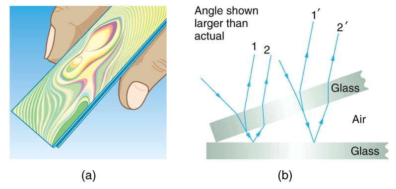
An important application of thin film interference is found in the manufacturing of optical instruments. A lens or mirror can be compared with a master as it is being ground, allowing it to be shaped to an accuracy of less than a wavelength over its entire surface. Figure illustrates the phenomenon called Newton’s rings, which occurs when the plane surfaces of two lenses are placed together. (The circular bands are called Newton’s rings because Isaac Newton described them and their use in detail. Newton did not discover them; Robert Hooke did, and Newton did not believe they were due to the wave character of light.) Each successive ring of a given color indicates an increase of only one wavelength in the distance between the lens and the blank, so that great precision can be obtained. Once the lens is perfect, there will be no rings.
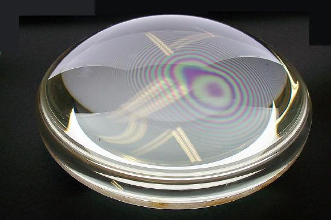
The wings of certain moths and butterflies have nearly iridescent colors due to thin film interference. In addition to pigmentation, the wing’s color is affected greatly by constructive interference of certain wavelengths reflected from its film-coated surface. Car manufacturers are offering special paint jobs that use thin film interference to produce colors that change with angle. This expensive option is based on variation of thin film path length differences with angle. Security features on credit cards, banknotes, driving licenses and similar items prone to forgery use thin film interference, diffraction gratings, or holograms. Australia led the way with dollar bills printed on polymer with a diffraction grating security feature making the currency difficult to forge. Other countries such as New Zealand and Taiwan are using similar technologies, while the United States currency includes a thin film interference effect.
MAKING CONNECTIONS: TAKE-HOME EXPERIMENT -- THIN FILM INTERFERENCE
One feature of thin film interference and diffraction gratings is that the pattern shifts as you change the angle at which you look or move your head. Find examples of thin film interference and gratings around you. Explain how the patterns change for each specific example. Find examples where the thickness changes giving rise to changing colors. If you can find two microscope slides, then try observing the effect shown in Figure 3. Try separating one end of the two slides with a hair or maybe a thin piece of paper and observe the effect.
Problem-Solving Strategies for Wave Optics
📖 OpenStax College Physics, Section 27.7. openstax.org · CC BY 4.0
- Discuss the meaning of polarization.
- Discuss the property of optical activity of certain materials.
Polaroid sunglasses are familiar to most of us. They have a special ability to cut the glare of light reflected from water or glass (Figure . Polaroids have this ability because of a wave characteristic of light called polarization. What is polarization? How is it produced? What are some of its uses? The answers to these questions are related to the wave character of light.
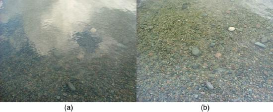
Light is one type of electromagnetic (EM) wave. As noted earlier, EM waves aretransverse wavesconsisting of varying electric and magnetic fields that oscillate perpendicular to the direction of propagation (Figure . There are specific directions for the oscillations of the electric and magnetic fields.Polarizationis the attribute that a wave’s oscillations have a definite direction relative to the direction of propagation of the wave. (This is not the same type of polarization as that discussed for the separation of charges.) Waves having such a direction are said to bepolarized. For an EM wave, we define thedirection of polarizationto be the direction parallel to the electric field. Thus we can think of the electric field arrows as showing the direction of polarization, as in Figure .
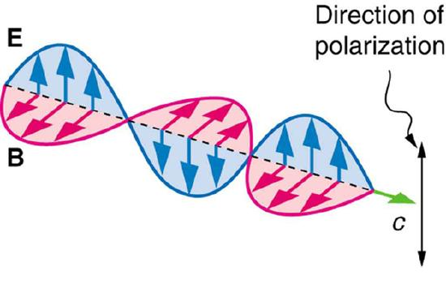
To examine this further, consider the transverse waves in the ropes shown in Figure . The oscillations in one rope are in a vertical plane and are said to bevertically polarized. Those in the other rope are in a horizontal plane and arehorizontally polarized. If a vertical slit is placed on the first rope, the waves pass through. However, a vertical slit blocks the horizontally polarized waves. For EM waves, the direction of the electric field is analogous to the disturbances on the ropes.
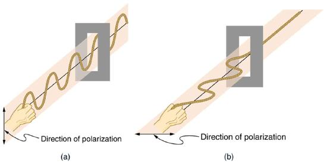
The Sun and many other light sources produce waves that are randomly polarized (Figure . Such light is said to beunpolarizedbecause it is composed of many waves with all possible directions of polarization.
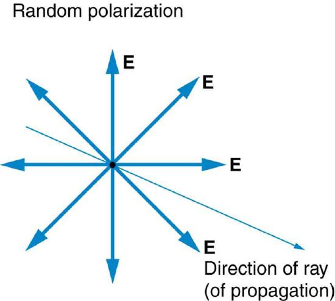
Polaroid materials, invented by the founder of Polaroid Corporation, Edwin Land, act as a polarizing slit for light, allowing only polarization in one direction to pass through. Polarizing filters are composed of long molecules aligned in one direction. Thinking of the molecules as many slits, analogous to those for the oscillating ropes, we can understand why only light with a specific polarization can get through. The axis of a polarizing filter is the direction along which the filter passes the electric field of an EM wave (Figure .
Figure shows the effect of two polarizing filters on originally unpolarized light. The first filter polarizes the light along its axis. When the axes of the first and second filters are aligned (parallel), then all of the polarized light passed by the first filter is also passed by the second. If the second polarizing filter is rotated, only the component of the light parallel to the second filter’s axis is passed. When the axes are perpendicular, no light is passed by the second.
Only the component of the EM wave parallel to the axis of a filter is passed. Let us call the angle between the direction of polarization and the axis of a filter \(\theta\). If the electric field has an amplitude \(E\), then the transmitted part of the wave has an amplitude \(E \cos{\theta}\) (Figure . Since the intensity of a wave is proportional to its amplitude squared, the intensity \(I\) of the transmitted wave is related to the incident wave by
where \(I_{0}\) is the intensity of the polarized wave before passing through the filter. Equation \ref{27.9.1} is known as Malus’s law.
![This figure has four subfigures. The first three are schematics and the last is a photograph. The first schematic looks much as in the previous figure, except that there is a second polarizing filter on the axis after the first one. The second polarizing filter has its lines aligned parallel to those of the first polarizing filter (i e, vertical). The vertical double headed arrow labeled E that emerges from the first polarizing filter also passes through the second polarizing filter. The next schematic is similar to the first, except that the second polarizing filter is rotated at forty five degrees with respect to the first polarizing filter. The double headed arrow that emerges from this second filter is also oriented at this same angle. It is also noticeably shorter than the other double headed arrows. The third schematic shows the same situation again, except that the second polarizing filter is now rotated ninety degrees with respect to the first polarizing filter. This time, there is no double headed arrow at all after the second polarizing filter. Finally, the last subfigure shows a photo of three circular optical filters placed over a bright colorful pattern. Two of these filters are place next to each other and the third is placed on top of the other two so that the center of the third is at the point where the edges of the two filters underneath touch. Some light passes through where the upper filter overlaps the left-hand underneath filter. Where the upper filter overlaps the right-hand lower filter, no light passes through.](images/ch27/fig27-41-this-figure-has-four-subfigures-the-firs.jpg)
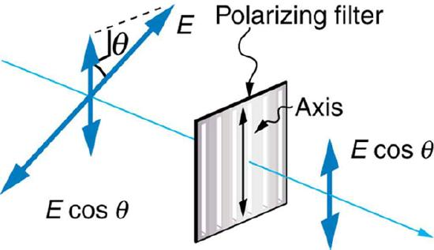
What angle is needed between the direction of polarized light and the axis of a polarizing filter to reduce its intensity by \(90.0 \% \)?
When the intensity is reduced by \(90.0 \%\), it is \(10.0 \%\) or 0.100 times its original value. That is, \(I = 0.100 I_{0}\). Using this information, the equation \(I = I_{0}\cos{\theta}^{2}\) can be used to solve for the needed angle.
Solving the equation \(I = I_{0} \cos{\theta}^{2}\) for \(\cos{\theta}\) and substituting with the relationship between \(I\) and \(I_{0}\) gives
Solving for \(\theta\) yields
A fairly large angle between the direction of polarization and the filter axis is needed to reduce the intensity to \(10.0 \%\) of its original value. This seems reasonable based on experimenting with polarizing films. It is interesting that, at an angle of \(45^{\circ}\), the intensity is reduced to \(50\%\) of its original value (as you will show in this section’s Problems & Exercises). Note that \(71.6^{\circ}\) is \(18.4^{\circ}\) from reducing the intensity to zero, and that at an angle of \(18.4^{\circ}\) the intensity is reduced to \(90.0\%\) of its original value (as you will also show in Problems & Exercises), giving evidence of symmetry.
By now you can probably guess that Polaroid sunglasses cut the glare in reflected light because that light is polarized. You can check this for yourself by holding Polaroid sunglasses in front of you and rotating them while looking at light reflected from water or glass. As you rotate the sunglasses, you will notice the light gets bright and dim, but not completely black. This implies the reflected light is partially polarized and cannot be completely blocked by a polarizing filter.
Figure 8 illustrates what happens when unpolarized light is reflected from a surface. Vertically polarized light is preferentially refracted at the surface, so thatthe reflected light is left more horizontally polarized.The reasons for this phenomenon are beyond the scope of this text, but a convenient mnemonic for remembering this is to imagine the polarization direction to be like an arrow. Vertical polarization would be like an arrow perpendicular to the surface and would be more likely to stick and not be reflected. Horizontal polarization is like an arrow bouncing on its side and would be more likely to be reflected. Sunglasses with vertical axes would then block more reflected light than unpolarized light from other sources.
![The schematic shows a block of glass in air. A ray labeled unpolarized light starts at the upper left and impinges on the center of the block. Centered on this ray is a symmetric star burst pattern of double headed arrows. From this point where this ray hits the glass block there emerges a reflected ray that goes up and to the right and a refracted ray that goes down and to the right. Both of these rays are labeled partially polarized light. The reflected ray has evenly spaced large black dots on it that are labeled perpendicular to plane of paper. Centered on each black dot is a double headed arrow that is rather short and is perpendicular to the ray. The refracted ray also has evenly spaced dots, but they are much smaller. Centered on each of these small black dots are quite large doubled headed arrows that are perpendicular to the refracted ray.](images/ch27/fig27-43-the-schematic-shows-a-block-of-glass-in-.jpg)
Since the part of the light that is not reflected is refracted, the amount of polarization depends on the indices of refraction of the media involved. It can be shown thatreflected light is completely polarizedat a angle of reflection \(\theta_{b}\), given by \[\tan{\theta_{b}} = \frac{n_{2}}{n_{1}}, \label{27.9.4}\] where \(n_{1}\) is the medium in which the incident and reflected light travel and \(n_{2}\) is the index of refraction of the medium that forms the interface that reflects the light. This equation is known asBrewster's law, and \(\theta_{b}\) is known asBrewster's angle, named after the 19th-century Scottish physicist who discovered them.
THINGS GREAT AND SMALL: ATOMIC EXPLANATION OF POLARIZING FILTERS:
Polarizing filters have a polarization axis that acts as a slit. This slit passes electromagnetic waves (often visible light) that have an electric field parallel to the axis. This is accomplished with long molecules aligned perpendicular to the axis as shown in Figure 9.
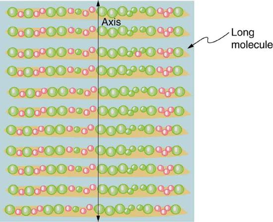
Figure 10 illustrates how the component of the electric field parallel to the long molecules is absorbed. An electromagnetic wave is composed of oscillating electric and magnetic fields. The electric field is strong compared with the magnetic field and is more effective in exerting force on charges in the molecules. The most affected charged particles are the electrons in the molecules, since electron masses are small. If the electron is forced to oscillate, it can absorb energy from the EM wave. This reduces the fields in the wave and, hence, reduces its intensity. In long molecules, electrons can more easily oscillate parallel to the molecule than in the perpendicular direction. The electrons are bound to the molecule and are more restricted in their movement perpendicular to the molecule. Thus, the electrons can absorb EM waves that have a component of their electric field parallel to the molecule. The electrons are much less responsive to electric fields perpendicular to the molecule and will allow those fields to pass. Thus the axis of the polarizing filter is perpendicular to the length of the molecule.
![The figure contains two schematics. The first schematic shows a long molecule. An EM wave goes through the molecule. The ray of the EM wave is at ninety degrees to the molecular axis and the electric field of the EM wave oscillates along the molecular axis. After passing the long molecule, the magnitude of the oscillations of the EM wave are significantly reduced. The second schematic shows a similar drawing, except that the EM wave oscillates perpendicular to the axis of the long molecule. After passing the long molecule, the magnitude of the oscillation of the EM wave is unchanged.](images/ch27/fig27-45-the-figure-contains-two-schematics-the-f.jpg)
All we need to solve these problems are the indices of refraction. Air has \(n_{1} = 100\), water has \(n_{2} = 1.333\), and crown glass has \(n'_{2} = 1.520\). The equation \(\tan{\theta_{b}} = \frac{n_{2}}{n_{1}}\) can be directly applied to find \(\theta_{b}\) in each case.
Putting the known quantities into the equation
Solving for the angle \(\theta_{b}\) yields
Similarly, for crown glass and air, \[\tan{\theta_{b}'} = \frac{n'_{2}}{n_{1}} = \frac{1.520}{1.00} = 1.52.\] Thus, \[\theta_{b}' = \tan{1.52}^{-1} = 56.7^{\circ}.\]
Light reflected at these angles could be completely blocked by a good polarizing filter held with itsaxis vertical.Brewster’s angle for water and air are similar to those for glass and air, so that sunglasses are equally effective for light reflected from either water or glass under similar circumstances. Light not reflected is refracted into these media. So at an incident angle equal to Brewster’s angle, the refracted light will be slightly polarized vertically. It will not be completely polarized vertically, because only a small fraction of the incident light is reflected, and so a significant amount of horizontally polarized light is refracted.
If you hold your Polaroid sunglasses in front of you and rotate them while looking at blue sky, you will see the sky get bright and dim. This is a clear indication that light scattered by air is partially polarized. Figure helps illustrate how this happens. Since light is a transverse EM wave, it vibrates the electrons of air molecules perpendicular to the direction it is traveling. The electrons then radiate like small antennae. Since they are oscillating perpendicular to the direction of the light ray, they produce EM radiation that is polarized perpendicular to the direction of the ray. When viewing the light along a line perpendicular to the original ray, as in Figure 11, there can be no polarization in the scattered light parallel to the original ray, because that would require the original ray to be a longitudinal wave. Along other directions, a component of the other polarization can be projected along the line of sight, and the scattered light will only be partially polarized. Furthermore, multiple scattering can bring light to your eyes from other directions and can contain different polarizations.
![The schematic shows a ray labeled unpolarized sunlight coming horizontally from the left along what we shall call the x axis. On this ray is a symmetric star burst pattern of double headed arrows, with all the arrows in the plane perpendicular to the ray, This ray strikes a dot labeled molecule. From the molecule three rays emerge. One ray goes straight down, in the negative y direction. It is labeled polarized light and has a single double headed arrow on it that is perpendicular to the plane of the page, that is, the double headed arrow is parallel to the z axis. A second ray continues from the molecule in the same direction as the incoming ray and is labeled unpolarized light. This ray also has a symmetric star burst pattern of double headed arrows on it. A final ray comes out of the plane of the paper in the x z plane, at about 45 degrees from the x axis. This ray is labeled partially polarized light and has a nonsymmetric star burst pattern of double headed arrows on it.](images/ch27/fig27-46-the-schematic-shows-a-ray-labeled-unpola.jpg)
Photographs of the sky can be darkened by polarizing filters, a trick used by many photographers to make clouds brighter by contrast. Scattering from other particles, such as smoke or dust, can also polarize light. Detecting polarization in scattered EM waves can be a useful analytical tool in determining the scattering source.
There is a range of optical effects used in sunglasses. Besides being Polaroid, other sunglasses have colored pigments embedded in them, while others use non-reflective or even reflective coatings. A recent development is photochromic lenses, which darken in the sunlight and become clear indoors. Photochromic lenses are embedded with organic microcrystalline molecules that change their properties when exposed to UV in sunlight, but become clear in artificial lighting with no UV.
TAKE-HOME EXPERIMENT: POLARIZATION
Find Polaroid sunglasses and rotate one while holding the other still and look at different surfaces and objects. Explain your observations. What is the difference in angle from when you see a maximum intensity to when you see a minimum intensity? Find a reflective glass surface and do the same. At what angle does the glass need to be oriented to give minimum glare?
While you are undoubtedly aware of liquid crystal displays (LCDs) found in watches, calculators, computer screens, cellphones, flat screen televisions, and other myriad places, you may not be aware that they are based on polarization. Liquid crystals are so named because their molecules can be aligned even though they are in a liquid. Liquid crystals have the property that they can rotate the polarization of light passing through them by \(90^{\circ}\). Furthermore, this property can be turned off by the application of a voltage, as illustrated in Figure . It is possible to manipulate this characteristic quickly and in small well-defined regions to create the contrast patterns we see in so many LCD devices.
In flat screen LCD televisions, there is a large light at the back of the TV. The light travels to the front screen through millions of tiny units called pixels (picture elements). One of these is shown in Figure \(\PageIndex{12a}\) and \(\PageIndex{12b}\). Each unit has three cells, with red, blue, or green filters, each controlled independently. When the voltage across a liquid crystal is switched off, the liquid crystal passes the light through the particular filter. One can vary the picture contrast by varying the strength of the voltage applied to the liquid crystal.
![The figure contains two schematics and one photograph. The first schematic shows a ray of initially unpolarized light going through a vertical polarizer, then an element labeled L C D no voltage ninety degree rotation, then finally a horizontal polarizer. The initially unpolarized light becomes vertically polarized after the vertical polarizer, then is rotated ninety degrees by the L C D element so that it is horizontally polarized, then it passes through the horizontal polarizer. The second schematic is the same except that the L C D element is labeled voltage on, no rotation. The light coming out of the L C D element is thus vertically polarized and does not pass through the horizontal polarizer. Finally, a photograph is shown of a laptop computer that is open so that you can see its screen, which is on and has some icons and windows visible.](images/ch27/fig27-47-the-figure-contains-two-schematics-and-o.jpg)
Many crystals and solutions rotate the plane of polarization of light passing through them. Such substances are said to beoptically active. Examples include sugar water, insulin, and collagen (Figure . In addition to depending on the type of substance, the amount and direction of rotation depends on a number of factors. Among these is the concentration of the substance, the distance the light travels through it, and the wavelength of light. Optical activity is due to the asymmetric shape of molecules in the substance, such as being helical. Measurements of the rotation of polarized light passing through substances can thus be used to measure concentrations, a standard technique for sugars. It can also give information on the shapes of molecules, such as proteins, and factors that affect their shapes, such as temperature and pH.
![The schematic shows an initially unpolarized ray of light that passes through three optical elements. The first is a vertical polarizer, so the electric field is vertical after the ray passes through it. Next comes a block that is labeled optically active. Following this block the electric field has been rotated by an angle theta with respect to the vertical. In the schematic this angle is about forty five degrees. Finally, the ray passes through another vertical polarizer that is labeled analyzer. A shorter and vertically oriented electric field appears after this element.](images/ch27/fig27-48-the-schematic-shows-an-initially-unpolar.jpg)
Glass and plastic become optically active when stressed; the greater the stress, the greater the effect. Optical stress analysis on complicated shapes can be performed by making plastic models of them and observing them through crossed filters, as seen in Figure 14. It is apparent that the effect depends on wavelength as well as stress. The wavelength dependence is sometimes also used for artistic purposes.
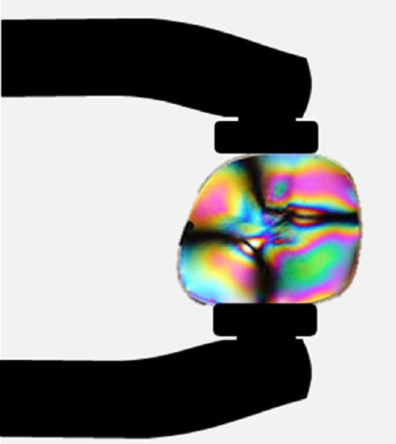
Another interesting phenomenon associated with polarized light is the ability of some crystals to split an unpolarized beam of light into two. Such crystals are said to beberefringent(see Figure 15). Each of the separated rays has a specific polarization. One behaves normally and is called the ordinary ray, whereas the other does not obey Snell’s law and is called the extraordinary ray. Birefringent crystals can be used to produce polarized beams from unpolarized light. Some birefringent materials preferentially absorb one of the polarizations. These materials are called dichroic and can produce polarization by this preferential absorption. This is fundamentally how polarizing filters and other polarizers work. The interested reader is invited to further pursue the numerous properties of materials related to polarization.
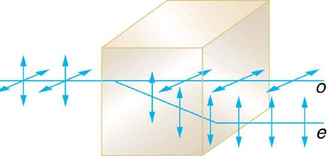
📖 OpenStax College Physics, Section 27.8. openstax.org · CC BY 4.0
- Discuss the different types of microscopes.
Physics research underpins the advancement of developments in microscopy. As we gain knowledge of the wave nature of electromagnetic waves and methods to analyze and interpret signals, new microscopes that enable us to “see” more are being developed. It is the evolution and newer generation of microscopes that are described in this section.
The use of microscopes (microscopy) to observe small details is limited by the wave nature of light. Owing to the fact that light diffracts significantly around small objects, it becomes impossible to observe details significantly smaller than the wavelength of light. One rule of thumb has it that all details smaller than about \(\lambda\) are difficult to observe. Radar, for example, can detect the size of an aircraft, but not its individual rivets, since the wavelength of most radar is several centimeters or greater. Similarly, visible light cannot detect individual atoms, since atoms are about 0.1 nm in size and visible wavelengths range from 380 to 760 nm. Ironically, special techniques used to obtain the best possible resolution with microscopes take advantage of the same wave characteristics of light that ultimately limit the detail.
MAKING CONNECTIONS: Waves
All attempts to observe the size and shape of objects are limited by the wavelength of the probe. Sonar and medical ultrasound are limited by the wavelength of sound they employ. We shall see that this is also true in electron microscopy, since electrons have a wavelength. Heisenberg’s uncertainty principle asserts that this limit is fundamental and inescapable, as we shall see in quantum mechanics.
The most obvious method of obtaining better detail is to utilize shorter wavelengths.Ultraviolet (UV) microscopeshave been constructed with special lenses that transmit UV rays and utilize photographic or electronic techniques to record images. The shorter UV wavelengths allow somewhat greater detail to be observed, but drawbacks, such as the hazard of UV to living tissue and the need for special detection devices and lenses (which tend to be dispersive in the UV), severely limit the use of UV microscopes. Elsewhere, we will explore practical uses of very short wavelength EM waves, such as x rays, and other short-wavelength probes, such as electrons in electron microscopes, to detect small details.
Another difficulty in microscopy is the fact that many microscopic objects do not absorb much of the light passing through them. The lack of contrast makes image interpretation very difficult.Contrastis the difference in intensity between objects and the background on which they are observed. Stains (such as dyes, fluorophores, etc.) are commonly employed to enhance contrast, but these tend to be application specific. More general wave interference techniques can be used to produce contrast. Figure shows the passage of light through a sample. Since the indices of refraction differ, the number of wavelengths in the paths differs. Light emerging from the object is thus out of phase with light from the background and will interfere differently, producing enhanced contrast, especially if the light is coherent and monochromatic -- as in laser light.
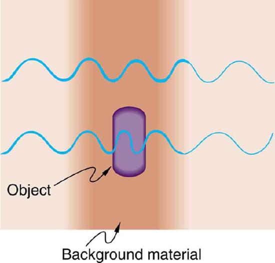
Inference microscopesenhance contrast between objects and background by superimposing a reference beam of light upon the light emerging from the sample. Since light from the background and objects differ in phase, there will be different amounts of constructive and destructive interference, producing the desired contrast in final intensity. Figure shows schematically how this is done. Parallel rays of light from a source are split into two beams by a half-silvered mirror. These beams are called the object and reference beams. Each beam passes through identical optical elements, except that the object beam passes through the object we wish to observe microscopically. The light beams are recombined by another half-silvered mirror and interfere. Since the light rays passing through different parts of the object have different phases, interference will be significantly different and, hence, have greater contrast between them.
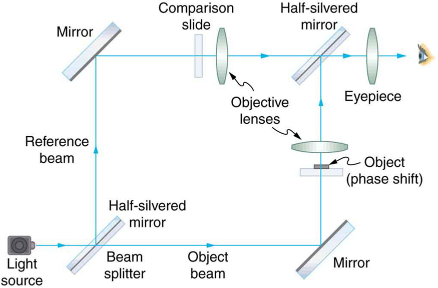
Another type of microscope utilizing wave interference and differences in phases to enhance contrast is called thephase-contrast microscope. While its principle is the same as the interference microscope, the phase-contrast microscope is simpler to use and construct. Its impact (and the principle upon which it is based) was so important that its developer, the Dutch physicist Frits Zernike (1888–1966), was awarded the Nobel Prize in 1953. Figure shows the basic construction of a phase-contrast microscope. Phase differences between light passing through the object and background are produced by passing the rays through different parts of a phase plate (so called because it shifts the phase of the light passing through it). These two light rays are superimposed in the image plane, producing contrast due to their interference.
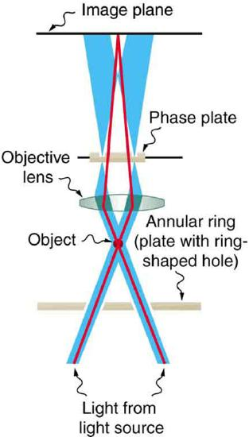
Apolarization microscopealso enhances contrast by utilizing a wave characteristic of light. Polarization microscopes are useful for objects that are optically active or birefringent, particularly if those characteristics vary from place to place in the object. Polarized light is sent through the object and then observed through a polarizing filter that is perpendicular to the original polarization direction. Nearly transparent objects can then appear with strong color and in high contrast. Many polarization effects are wavelength dependent, producing color in the processed image. Contrast results from the action of the polarizing filter in passing only components parallel to its axis.
Apart from the UV microscope, the variations of microscopy discussed so far in this section are available as attachments to fairly standard microscopes or as slight variations. The next level of sophistication is provided by commercialconfocal microscopes, to obtain three-dimensional images rather than two-dimensional images. Here, only a single plane or region of focus is identified; out-of-focus regions above and below this plane are subtracted out by a computer so the image quality is much better. This type of microscope makes use of fluorescence, where a laser provides the excitation light. Laser light passing through a tiny aperture called a pinhole forms an extended focal region within the specimen. The reflected light passes through the objective lens to a second pinhole and the photomultiplier detector (Figure . The second pinhole is the key here and serves to block much of the light from points that are not at the focal point of the objective lens. The pinhole is conjugate (coupled) to the focal point of the lens. The second pinhole and detector are scanned, allowing reflected light from a small region or section of the extended focal region to be imaged at any one time. The out-of-focus light is excluded. Each image is stored in a computer, and a full scanned image is generated in a short time. Live cell processes can also be imaged at adequate scanning speeds allowing the imaging of three-dimensional microscopic movement. Confocal microscopy enhances images over conventional optical microscopy, especially for thicker specimens, and so has become quite popular.
![Schematic of a confocal microscope. There is a sample at the bottom, a pinhole at the top, and a pinhole at the right side. The sample is a horizontal rectangle that is rather thick in the vertical direction. A green laser beam coming from the right is focused through the right pinhole, then reflects downward off of a dichroic mirror. It is then collected by a horizontal objective lens and focused onto the sample. The focus is not a point, but an extended zone where the beam diameter is minimal. Two solid red rays leave the focal plane of the objective lens and diverge upward. This plane is inside the sample and is labeled object in focal plane. These rays pass through the objective lens and begin to converge. After passing through the dichroic mirror, they continue upward and are focused through the top pinhole. After passing through this pinhole, these rays enter a detector. Two dashed red rays leave the sample at a point slightly above the focal plane, which is labeled object not in focal plane. These rays follow similar paths as the solid red rays, but they do not focus on the pinhole and so are blocked and do not reach the detector.](images/ch27/fig27-54-schematic-of-a-confocal-microscope-there.jpg)
The next level of sophistication is provided by microscopes attached to instruments that isolate and detect only a small wavelength band of light -- monochromators and spectral analyzers. Here, the monochromatic light from a laser is scattered from the specimen. This scattered light shifts up or down as it excites particular energy levels in the sample. The uniqueness of the observed scattered light can give detailed information about the chemical composition of a given spot on the sample with high contrast -- like molecular fingerprints. Applications are in materials science, nanotechnology, and the biomedical field. Fine details in biochemical processes over time can even be detected. The ultimate in microscopy is the electron microscope -- to be discussed later. Research is being conducted into the development of new prototype microscopes that can become commercially available, providing better diagnostic and research capacities.
📖 OpenStax College Physics, Section 27.9. openstax.org · CC BY 4.0
| Section | Title |
|---|---|
| 27.1 | 27.1: The Wave Aspect of Light- Interference |
| 27.2 | 27.2: Huygens's Principle - Diffraction |
| 27.3 | 27.3: Young’s Double Slit Experiment |
| 27.4 | 27.4: Multiple Slit Diffraction |
| 27.5 | 27.5: Single Slit Diffraction |
| 27.6 | 27.6: Limits of Resolution- The Rayleigh Criterion |
| 27.7 | 27.7: Thin Film Interference |
| 27.8 | 27.8: Polarization |
| 27.9 | 27.9: Microscopy Enhanced by the Wave Characteristics of Light |